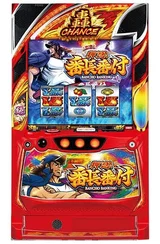

DATA通常時だけ数える
AT ―
回転数とAT初当りは通常時で数えてください（AT・ボーナス中は除く）。AT初当りは通常時から轟チャンスに入った回数です。
結果
入れた分でその場で計算数えたものを入れると、設定1〜6の可能性がここに出ます。入れた分だけ、その場で計算し直します。

パオン・ディーピー／2026年12月7日導入
AT初当り 1/365.1〜1/272.3／機械割 97.6〜114.0%
AT初当りは設定1と6で1/365.1→1/272.3（約1.34倍）。並びは設定1＜3＜5＜2＜4＜6で、設定5（1/344.1）は設定2（1/315.6）より重い。初当りだけでは設定5を拾いにくいので、結果には偶数設定の合計も出す。
回転数とAT初当りは通常時で数えてください（AT・ボーナス中は除く）。AT初当りは通常時から轟チャンスに入った回数です。
数えたものを入れると、設定1〜6の可能性がここに出ます。入れた分だけ、その場で計算し直します。
終了画面・トロフィーなどの設定示唆は、導入前の時点でまだ公表されていません。分かりしだい押せるボタンを足します。
導入前なので、数字は解析サイトの公表値です（ちょんぼりすた・パチ7で一致）。設定5は機械割113.0%と高いのに初当りは重く、初当り以外の部分で出る設定とみられます。示唆と小役は導入後に足します。
| 設定 | AT初当り | 機械割 |
|---|---|---|
| 1 | 365.1 | 97.6 |
| 2 | 315.6 | 98.6 |
| 3 | 359.7 | 100.1 |
| 4 | 282.1 | 105.0 |
| 5 | 344.1 | 113.0 |
| 6 | 272.3 | 114.0 |
確率は「1/〇〇」の分母。AT初当り・機械割はちょんぼりすた・パチ7で一致。小役確率・CZ確率の設定差は未公表です。
打ち方はちょんぼりすたの記載です。導入後に細かい停止形が出たら書き足します。
打ち方と天井（ちょんぼりすた） ↗ スペックと天井（パチ7） ↗L押忍！番長番付で設定差が公表されているのは、AT初当りと機械割です。AT初当りは設定1で1/365.1、設定6で1/272.3と約1.34倍の差がありますが、並び方に特徴があります。設定2（1/315.6）が設定3（1/359.7）より軽く、設定4（1/282.1）が設定5（1/344.1）より軽い、偶数設定が優遇された並びです。設定5は機械割が113.0%と高いのに初当りは設定2より重く、初当り以外の部分で出玉が増える設定とみられます。
3000G回したときのAT初当りの平均は、設定1で約8.2回、設定6で約11.0回です。差は3回ほどで、ふつうのブレに埋もれてしまいます。このツールと同じ計算で、設定6の台を打ったときに「設定4以上の合計が80％以上」になる割合をシミュレーションすると、3000Gで約2％、5000Gで約8％、8000Gで約17％でした。設定5が重いぶん「4以上の合計」は上がりにくいので、結果に出す「偶数設定の合計」も合わせて見てください。設定1の台が3000Gで同じ結果になる割合は1％未満です。
導入前の時点では、終了画面やトロフィーなどの設定示唆は公表されていません。CZ（漢磨きチャレンジ・漢磨きバトル）の当選率や小役の設定差もまだ出ていないので、このツールはAT初当りだけで計算しています。示唆や小役の設定差が分かりしだい、押せるボタンや数える項目を足します。
天井はCZ間900ptでCZ、AT間999G＋αでATに当選し、設定変更後は599G＋αに短縮されるとされています（パチ7）。回転数は通常時だけを数え、AT・ボーナス中のゲーム数は含めないでください。データカウンターでATの回数が分かれば、打つ前の台選びにも使えます。期待差枚は各設定の機械割を確率で重み付けした値で、閉店までの残り時間が短いほど小さくなります。
| 設定 | AT初当り | 機械割% |
|---|
解析サイトの公開値（2026年11月24日時点。2026年12月7日導入予定）。AT初当り・機械割はちょんぼりすた・パチ7で一致。天井のCZ間900pt・AT間999Gは2サイト一致、設定変更後599Gはパチ7のみ。